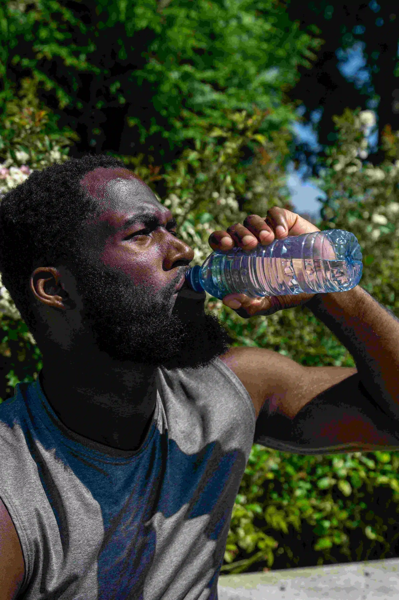

A importância da hidratação
A hidratação trabalhando a favor da sua saúde, ela também é a gasolina do seu corpo.
Desidratação no Calor:
Todos os dias, perdemos água por meio do suor. Essa perda pode variar de 500 ml diários, ao descansar em um ambiente fresco, até 4 litros por dia durante a prática de exercícios no calor. É por isso que jogos e grandes eventos esportivos realizados em pleno verão são tão exaustantes para os atletas.

Benefícios de Beber Água:
Consumir água suficiente todos os dias é importante para a saúde. Beber água pode prevenir a desidratação, que pode causar:
- dificuldade de raciocínio,
- alterações de humor,
- superaquecimento do corpo,
- prisão de ventre,
- cálculos renais.
A água não contém calorias; portanto, substituir bebidas açucaradas por água pura pode ajudar a reduzir a ingestão calórica.

A Água ajuda seu corpo em:
- Manter uma temperatura normal.
- Hidratar e amortecer as articulações.
- Proteger a medula espinhal e outros tecidos sensíveis.
- Eliminar resíduos por meio da urina, da transpiração e da evacuação.

Quanto Beber e Como Variar Além da Água Pura:
Os especialistas recomendam beber cerca de 11 xícaras de água por dia para a mulher média e 16 para homens. E nem todos esses copos têm que vir de água pura; por exemplo, alguns podem vir de água aromatizada com frutas ou legumes (limões, bagas ou fatias de laranja ou pepino), ou de café ou chá.